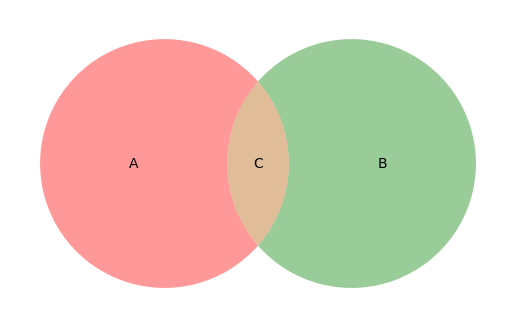
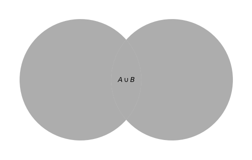
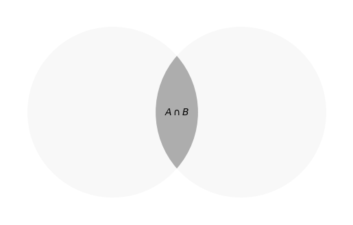
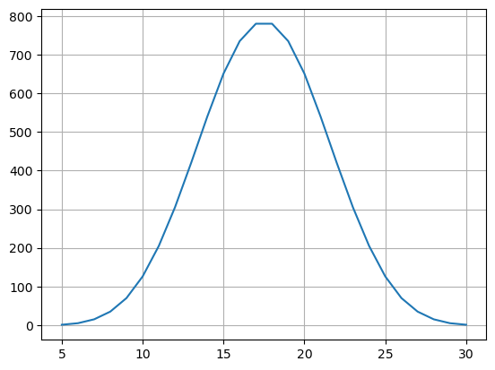
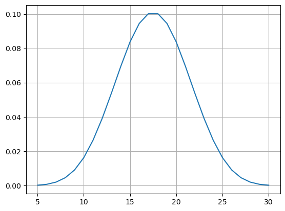

If you’re reading this, you have just begun your pocket-sized journey into machine learning topics. As with any field, you must start at the basics, and that is where you are now. Unfortunately, in this case, the basics aren’t so basic.
For most people (myself included), probability is one of the hardest concepts to grasp out of all of the mathematical disciplines. Most of the ideas are algebraically and computationally simple, but can be a conceptual nightmare. My only goal for this post is to form a basic layer of understanding with which you can use as a foundation for all of your future endeavours in machine learning.
We will start with basic probability.
Basic Probability
We’ll start with some terminology.
- The set of all possible outcomes is called the sample space, and is usually given the symbol \(S\).
- The probability of a event, \(A\), occurring can be calculated by taking the ratio of the cardinalities of the event and the sample space, \(P(A) = \frac{\left| A \right|}{\left| S \right|}\).
There were a lot of big words in there, so let’s take a look at an example. Imagine rolling a fair six-sided die. There are six equally likely possible outcomes: 1, 2, 3, 4, 5, 6. Therefore, since there are no other possible outcomes, then we have our sample space:
\[S = \{ 1, 2, 3, 4, 5, 6 \}\]
Now, let’s describe an “event”. We will call \(A\) the event where we roll an even number. Then we can write:
\[A = \{ 2, 4, 6 \}\]
Now look at the third rule again. The symbols and big words may look complicated, but “taking the ratio of the cardinalities of the event and the sample space” really just means counting up the number of elements in our event and dividing it by the total number of possible elements. In our case, there are three possible even numbers, and six possible total numbers, so:
\[P(A) = \frac{\left| A \right|}{\left| S \right|} = \frac{3}{6} = \frac{1}{2} = 0.5 = 50\%\]
This should be making sense so far. There are a few other things we can deduce from this simple equation too. Let’s calculate the probability of the sample space:
\[P(S) = \frac{\left| S \right|}{\left| S \right|} = \frac{6}{6} = 1 = 100\%\]
This should also make sense. The probability of any of the possible values occurring should be guaranteed. What about a set with nothing in it? We’ll call that set \(B\):
\[B = \{\}\]
Then the probability of \(B\) occuring is:
\[P(B) = \frac{\left| B \right|}{\left| S \right|} = \frac{0}{6} = 0\]
Which also makes sense. This gives us insight into the range of values that a probability should be able to take:
\[0 \leq P(A) \leq 1\]
This goes for all scenarios; not just for the die example.
Probability of This and That
Let’s extend our example by imagining that we roll two dice, one by one. The first roll can take on any one of six values, and the second one can take on six different values for each of the six values that the first roll could have taken. This gives us \(6 \times 6 = 36\) different possible outcomes. Let’s write our sample space like this:
\[S = \{ (1, 1), (1, 2), (1, 3) \ldots (6, 5), (6, 6) \}\]
What is the probability of the first roll being a \(2\)? Let’s write the set for the event of all combinations of rolls where the first roll is a \(2\):
\[A = \{ (2, 1), (2, 2), (2, 3), (2, 4), (2, 5), (2, 6) \}\]
And finally:
\[P(A) = \frac{\left| A \right|}{\left| S \right|} = \frac{6}{36} = \frac{1}{6} \approx 16.67\%\]
Let’s try another probability. This time we ask ourselves, “what’s the probability that our second roll is \(5\)”? Well, this set is very similar to the previous one:
\[B = \{ (1, 5), (2, 5), (3, 5), (4, 5), (5, 5), (6, 5) \}\]
And the probability is identical:
\[P(B) = \frac{\left| B \right|}{\left| S \right|} = \frac{6}{36} = \frac{1}{6} \approx 16.67\%\]
Last example! What’s the probability that the first roll is \(2\), and that our second roll is \(5\)? Well, this set is pretty simple:
\[C = \{ (2, 5) \}\]
So our probability is:
\[P(C) = \frac{\left| B \right|}{\left| S \right|} = \frac{1}{36} \approx 2.78\%\]
This is correct, but we have a more powerful technique up our sleeve. In order to find it, let’s look at a visual representation of our example:
The red circle on the left represents all outcomes in the \(A\) event, and the green circle on the right represents all outcomes in the \(B\) event. Notice that the intersection of these two regions shows the outcome for event \(C\).
There are two main operations when it comes to sets that are very useful for determining more advanced probabilities.
- Union
- Intersection
The union, given the symbol \(\cup\), is defined as the set of all events that both \(A\) and \(B\) contain. In the case of our picture, this is what the union looks like:

Conversely, the intersection, given the symbol \(\cap\), gives the set of outcomes that \(A\) and \(B\) share. Here is the diagram:

You can think of it this way:
- \(A \cup B = A~\mathrm{or}~B\)
- \(A \cap B = A~\mathrm{and}~B\)
But why is this useful? Well, there’s a really cool relationship that we can derive between the two of them just using the information so far. Here’s how we do it.
Imagine taking the individual probabilities of \(A\) and \(B\) and adding them together. In doing this, you’d have calculated the probability of the union of the two events, plus a little extra. This little extra comes from the fact that both sets contain their intersection, so you counted the intersection twice on accident. The first copy contributed to the union of the two sets, the second copy is the “little extra”. In other words:
\[P(A) + P(B) = P(A \cup B) + P(A \cap B)\]
We can rearrange this equation to get our desired result:
\[P(A \cap B) = P(A) + P(B) - P(A \cup B)\]
Let’s use this equation to recalculate the probability of \(C\) again. That is, let’s calculate the probability that the first roll is \(2\) and that the second roll is \(5\).
First, we need to find \(A \cup B\). Remember, this is the same as asking for all outcomes where the first number is \(2\) or that the second number is \(5\). We can take all of the individual elements from \(A\) and be \(B\) independently (making sure not to double count any) and place them together:
\[A \cup B = \{ (2, 1), (2, 2), (2, 3), (2, 4), (2, 5), (2, 6), (1, 5), (3, 5), (4, 5), (5, 5), (6, 5) \}\]
Notice that \((2, 5)\) appears in both sets, but we only count it once.
Let’s get this probability:
\[P(A \cup B) = \frac{\left| A \cup B \right|}{\left| S \right|} = \frac{11}{36} \approx 30.56\%\]
Now we can get to calculating!
\[\begin{equation} \begin{split} P(C) = P(A \cap B) &= P(A) + P(B) - P(A \cup B)\\ &= \frac{1}{6} + \frac{1}{6} - \frac{11}{36}\\ &= \frac{1}{36} \approx 2.78\% \end{split} \end{equation}\]
Exactly the same as last time!
This process may seem far more cumbersome than the original calculation, but as the sets of events start increasing in size, it is much easier to know how to calculate probabilities of intersections of events from other probabilities as opposed to actually counting it out.
Conditional Probability
Code
allRolls = []
currRoll = [1, 1, 1, 1, 1]
for a in range(1, 7):
currRoll[0] = a
for b in range(1, 7):
currRoll[1] = b
for c in range(1, 7):
currRoll[2] = c
for d in range(1, 7):
currRoll[3] = d
for e in range(1, 7):
currRoll[4] = e
allRolls.append(currRoll.copy())
allRollSums = [sum(roll) for roll in allRolls]
sumValues = list(range(5, 31))
sumCounts = [allRollSums.count(value) for value in sumValues]
plt.plot(sumValues, sumCounts)
plt.grid()
plt.show()
normalizedSumCounts = [count / sum(sumCounts) for count in sumCounts]
plt.plot(sumValues, normalizedSumCounts)
plt.grid()
plt.show()

Let’s extend our example by imagining that we roll the same die five times. The die is still fair, and takes on one of six values every roll. We will then track the total sum of all the rolls. For example, if the values that appeared during the rolls were \(1, 4, 3, 6, 2\), the total would be \(1 + 4 + 3 + 6 + 2 = 16\). We know that the lowest number of